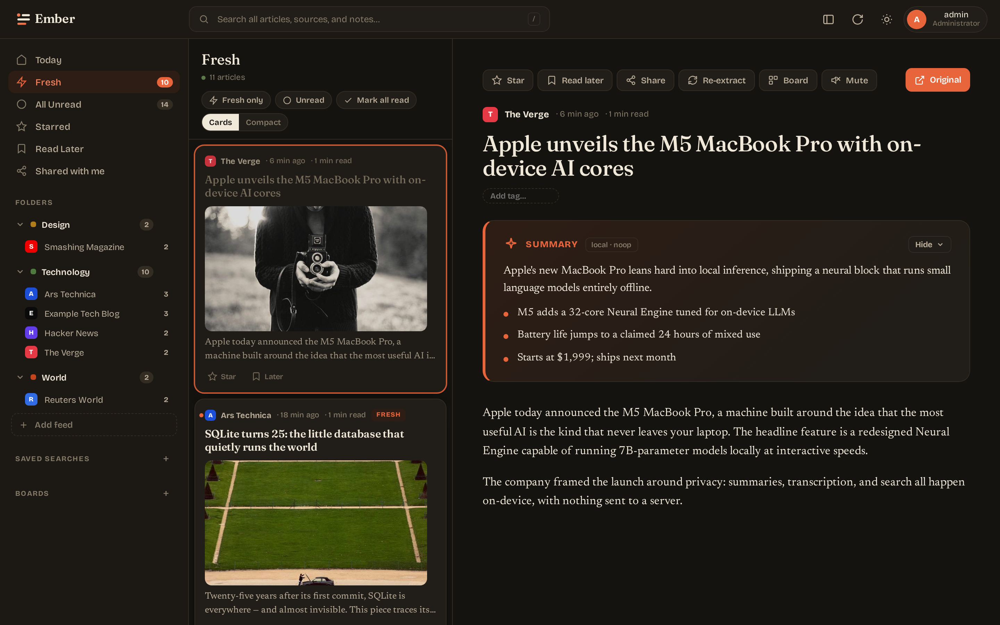

A reader for people who read.
Self-hosted RSS aggregation with an optional on-device LLM and a paper-and-ink interface. One Go binary, one container, one tab.

EMBER_DISABLE_SUMMARIES=1 (or run the stack without the ollama container)
and the reader works exactly the same — minus the summary card.
Sidebar of feeds and folders, the article list, and a focused reader. Keyboard navigation (j/k/r/m/s/?), drag-to-reorder.
Optional Ollama integration produces a paragraph + bullet summary for each article. Pull, swap, and tune models from the admin UI.
SQLite's FTS5 powers a dedicated search view + saved searches surfaced in the sidebar. Per-article user tags filter further.
Pure-Go SQLite, embedded Svelte SPA, no CGO. A single ~25 MB binary that runs anywhere and behind any reverse proxy.
Auto, Light, Dark, Solarized, Sepia, Nord, Gruvbox, High contrast, plus a custom theme derived from 3 colors you pick.
argon2id passwords, SameSite=Strict cookies, CSRF double-submit, SSRF block on outbound fetches, govulncheck-clean stdlib.
Reeder, FeedMe, and other Fever clients connect via /fever using a random per-user API token.
Hot-swap LLM model, tune temperature/top_p/num_ctx, manage backups + cleanup + OPML export schedules from Settings.
15-second background poll prepends new articles. A green dot on the favicon and (N) prefix in the tab title flag unread items.
Self-register a FIDO2 passkey per device. Sign in with Touch ID, Face ID, or a hardware key alongside your password.
Opt-in nightly summary of your fresh / unread / starred articles sent to your inbox. Pick the view, set the time in UTC.
Paste the homepage URL. Also recognizes YouTube channel/handle/playlist URLs and Mastodon profiles, resolving them automatically.
Each user gets a unique <handle>@<your-domain> address. Substack, Beehiiv etc. flow into the same reader.
Opt-in per device. VAPID keypair auto-generated. No third-party push gateway. Requires a trusted TLS cert.
Tracking-param-stripped canonical URL + title-fingerprint clustering (48h window) collapses syndicated wire stories into one row.
Most RSS readers are either bloated cloud services that mine your reading habits, or unmaintained scripts from the Google Reader exodus. Ember is what an opinionated 2026 reader looks like: a single Go binary you run on your own box, a paper-and-ink interface, and — only if you want it — small-local-LLM summaries for the days you can't read 300 articles.
git clone https://github.com/brandonhon/ember.git
cd ember/deploy
cp .env.example .env
# Set EMBER_SESSION_KEY and EMBER_ADMIN_PASSWORD
docker compose up -d
Open https://localhost, log in, click a starter pack.
You'll see articles within a minute.